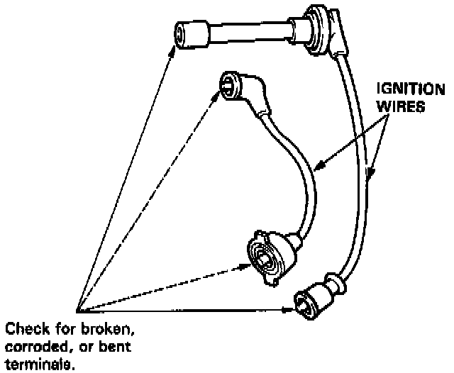
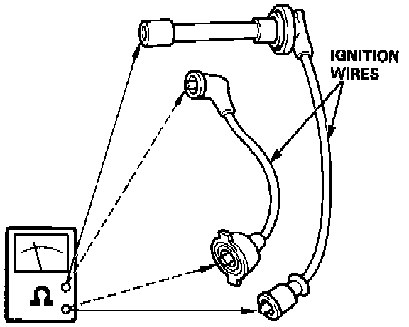

Ignition Cable: Testing and Inspection
INSPECTIONCAUTION: Carefully remove the ignition wires by pulling on the rubber boots. Do not bend the wires; you might break them inside.

1. Check the condition of the ignition wire terminals. If any terminal is corroded, clean it, and if it is broken or distorted, replace the wire.

2. Connect ohmmeter probes and measure resistance.
Resistance: 25 k ohms maximum at 20 °C (70 °F)
3. If resistance exceeds 25 k ohms, replace the ignition wire.